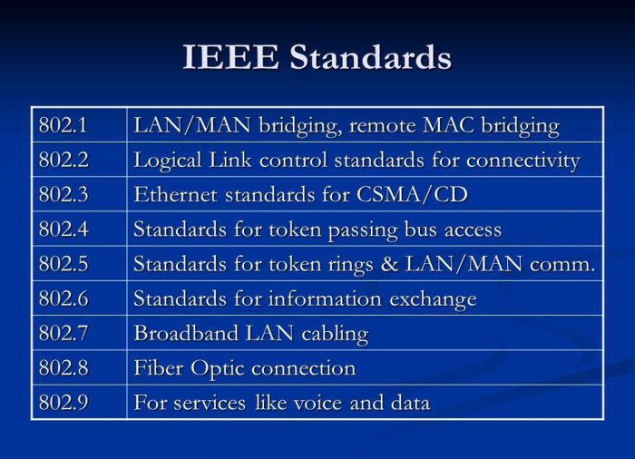

IEEE network standards, developed by the Institute of Electrical and Electronics Engineers, are essential rules that define how computers communicate in networks. Businesses worldwide rely on these standards, like Wi-Fi (IEEE 802.11), Ethernet (IEEE 802.3), and VLAN (IEEE 802.1Q), to ensure smooth communication and data exchange. Wi-Fi allows wireless connectivity, Ethernet provides fast wired connections, and VLANs enhance security by dividing networks into smaller segments. Overall, these standards are vital for businesses, enabling efficient and reliable networking.
